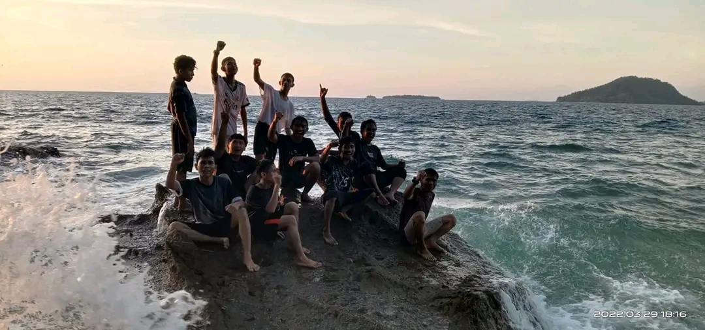

Biografi Penulis
Biografi Penulis merupakan sedikit catatan mengenai penulis.
Nama : Muhammad Azzahri Ahmelin
Tempat/Tanggal Lahir : Lirik, 19 Maret 2003
Umur : 21 Tahun
Status : Mahasiswa Aktif
Email : azzahriahmelin19@gmail.com
Biografi Penulis merupakan sedikit catatan mengenai penulis.
Nama : Muhammad Azzahri Ahmelin
Tempat/Tanggal Lahir : Lirik, 19 Maret 2003
Umur : 21 Tahun
Status : Mahasiswa Aktif
Email : azzahriahmelin19@gmail.com
Pengerjaan ini didasarkan oleh latihan dan juga tugas yang sudah diberikan untuk memantapkan dan menajamkan hasil dari pengetahuan dan latihan yang sudah dilakukan. Dan dari itu, diharapkan agar dengan melihat secara langsung, dapat membuat orang-orang disekitar paham akan kekurangan yang ada didalam setiap penulisan ataupun pembuatan web yang sudah kami lakukan.
Dikarenakan telah memiliki hasil yang menurut saya sudah memuaskan, walaupun masih ada yang belum bisa di stabilkan seperti ukuran gambar yang terlalu besar atau seperti font tulisan yang biasa saja, itu merupakan awal langkah bagi kami untuk melanjutkan nya dengan lebih baik lagi,tentu dengan pengetahuan dan pemahaman yang cukup untuk kami lakukan lagi dikemudian hari.
Tujuan dari penulisan ini adalah untuk melihat seberapa jauh bisa mahasiswa dituntut untuk mencari cara agar bisa membuat website sederhana, dan juga memadukan nya dengan sedikit tambahan berupa apa saja, seperti gambar,tulisan, maupun biografi yang sedang saya buat seperti sekarang ini. Dengan begitu, mahasiswa mampu untuk menggunakannya dengan bijak sebagai website sederhana yang telah dibuat melalui pengerjaan mandiri.
Sepertinya, hanya itu yang bisa saya tampilkan pada web saya kali ini. Sekiranya masih ada kesalahan dalam penulisan, peng-inputan, atau pemasukan gambar, itu semua murni kesalahan diri sendiri. Dikarenakan, setiap orang pasti memiliki kelemahan yang tidak dimiliki oleh orang lain, maka dari itu saya harap ini bisa saya jadikan pelajaran untuk kedepan nya.
Saya, Muhammad Azzahri Ahmelin, pamit undur diri.
Wassalamu'alaikum Warahmatullahi Wabarakatuh.